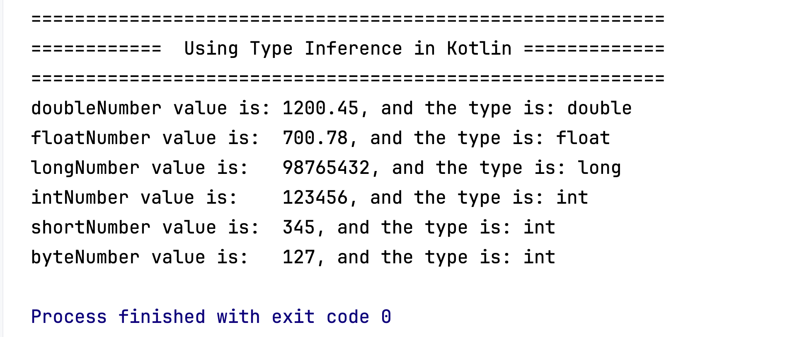
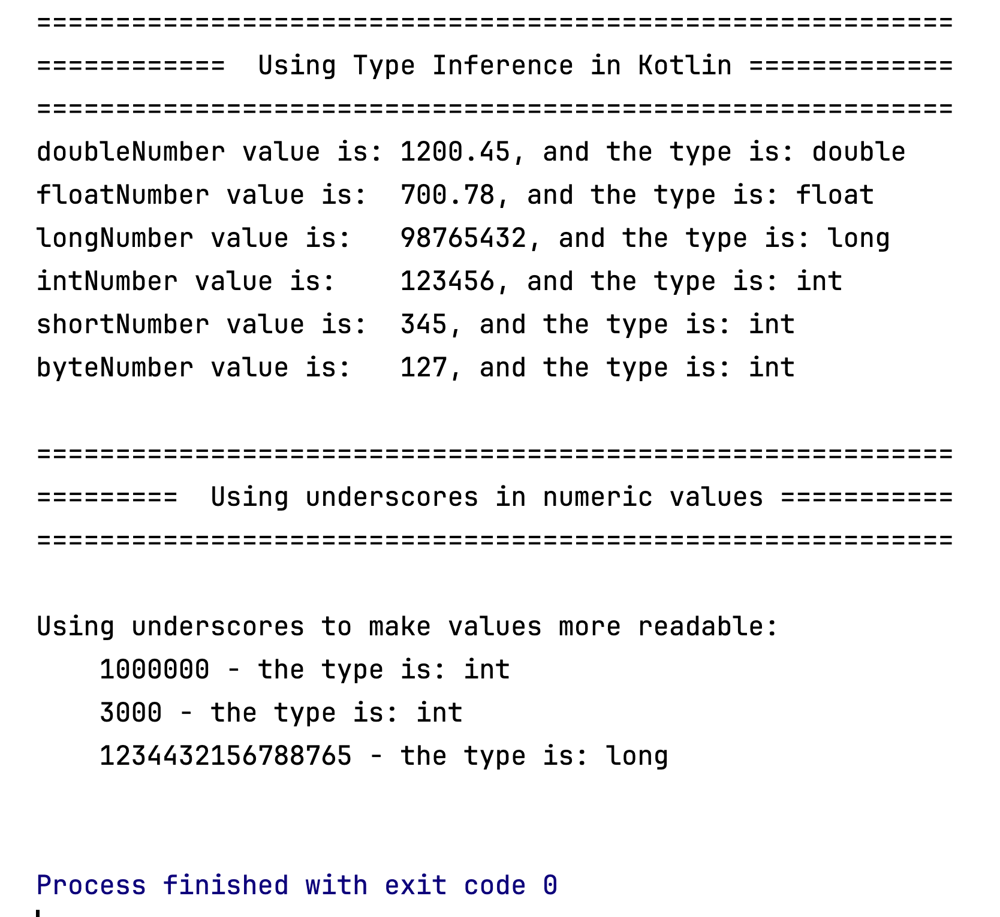
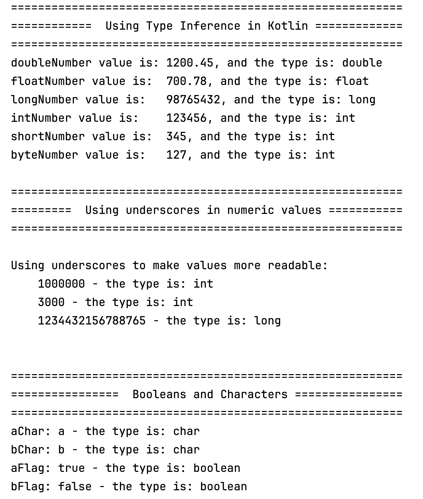

We will continue working in the Types project from the previous steps.
Having worked though this lab, your main function will be quite large e.g. you will have something similar to this:
fun main() {
println("Working with Variables and Types")
//Variables in kotlin and their types
val doubleNumber = 1200.45
val floatNumber = 700.78f
val longNumber = 98765432L
val intNumber = 123456
val shortNumber = 345
val byteNumber = 127
println("doubleNumber value is: " + doubleNumber + ", and the type is: " + doubleNumber.javaClass)
println("floatNumber value is: " + floatNumber + ", and the type is: " + floatNumber.javaClass)
println("longNumber value is: " + longNumber + ", and the type is: " + longNumber.javaClass)
println("intNumber value is: " + intNumber + ", and the type is: " + intNumber.javaClass)
println("shortNumber value is: " + shortNumber + ", and the type is: " + shortNumber.javaClass)
println("byteNumber value is: " + byteNumber + ", and the type is: " + byteNumber.javaClass)
//underscores make number values more readable in code
println("\nUsing underscores to make values more readable:")
val oneMillion = 1_000_000
val threeThousand = 3_000
val creditCardNumber = 1234_4321_5678_8765
println("\t" + oneMillion + " - the type is: " + oneMillion.javaClass)
println("\t" + threeThousand + " - the type is: " + threeThousand.javaClass)
println("\t" + creditCardNumber + " - the type is: " + creditCardNumber.javaClass)
//explicit conversion of value
val byteNum: Byte = 10 //static type check: OK
val intNum: Int = byteNum.toInt() //explicit conversion: OK
val floatNum: Float = byteNum.toFloat()
val doubleNum: Double = intNum.toDouble()
//characters in kotlin
val aChar = 'a' //type inference
val bChar: Char = 'b' //explicitly defining the type
println("aChar: " + aChar + " - the type is: " + aChar.javaClass)
println("bChar: " + bChar + " - the type is: " + bChar.javaClass)
//booleans in kotlin
val aFlag = true
val bFlag: Boolean = false
println("aFlag: " + aFlag + " - the type is: " + aFlag.javaClass)
println("bFlag: " + bFlag + " - the type is: " + bFlag.javaClass)
//mutable variables
var number = 5 //Int type is inferred
number ++; //mathematical operations are allowed
println("number: " + number)
number = 3; //Allowed to reassign a var too
println("number: " + number)
}
In this and the following step, we are going to create new functions in MainApp.kt, some of which take parameters and some of which don’t.
Delete all the statements in your fun main, but leave the function declaration i.e. :
fun main() {
}
First, we will add a new function called typeInference that doesn’t take any parameters…type this code and make sure it is OUTSIDE of your main() function :
fun typeInference() {
}
Then cut and paste the following code into this function:
println ("\n==========================================================")
println ("============ Using Type Inference in Kotlin =============")
println ("==========================================================")
val doubleNumber = 1200.45
val floatNumber = 700.78f
val longNumber = 98765432L
val intNumber = 123456
val shortNumber = 345
val byteNumber = 127
println("doubleNumber value is: " + doubleNumber + ", and the type is: " + doubleNumber.javaClass)
println("floatNumber value is: " + floatNumber + ", and the type is: " + floatNumber.javaClass)
println("longNumber value is: " + longNumber + ", and the type is: " + longNumber.javaClass)
println("intNumber value is: " + intNumber + ", and the type is: " + intNumber.javaClass)
println("shortNumber value is: " + shortNumber + ", and the type is: " + shortNumber.javaClass)
println("byteNumber value is: " + byteNumber + ", and the type is: " + byteNumber.javaClass)
Now let’s call this new function from INSIDE the main() function:
fun main() {
typeInference()
}
Run the code…you should get output similar to this:

Add another function called usingUnderscores that doesn’t take any parameters.
Then cut and paste the following code into this function:
println ("\n==========================================================")
println ("========= Using underscores in numeric values ===========")
println ("==========================================================")
//underscores make number values more readable in code
println("\nUsing underscores to make values more readable:")
val oneMillion = 1_000_000
val threeThousand = 3_000
val creditCardNumber = 1234_4321_5678_8765
println("\t" + oneMillion + " - the type is: " + oneMillion.javaClass)
println("\t" + threeThousand + " - the type is: " + threeThousand.javaClass)
println("\t" + creditCardNumber + " - the type is: " + creditCardNumber.javaClass)
println()
And call this new function from the main() function.
Run the code… you should now get output similar to this:

Add a third function called booleansAndCharacters that doesn’t take any parameters.
Then cut and paste the following code into this function:
println ("\n==========================================================")
println ("================ Booleans and Characters ================")
println ("==========================================================")
//characters in kotlin
val aChar = 'a' //type inference
val bChar: Char = 'b' //explicitly defining the type
println("aChar: " + aChar + " - the type is: " + aChar.javaClass)
println("bChar: " + bChar + " - the type is: " + bChar.javaClass)
//booleans in kotlin
val aFlag = true
val bFlag: Boolean = false
println("aFlag: " + aFlag + " - the type is: " + aFlag.javaClass)
println("bFlag: " + bFlag + " - the type is: " + bFlag.javaClass)
println()
And again, call this new function from the main() function.
Run the code… you should get output similar to this:

Save your code. In the next step, we will look at adding functions that take parameters.